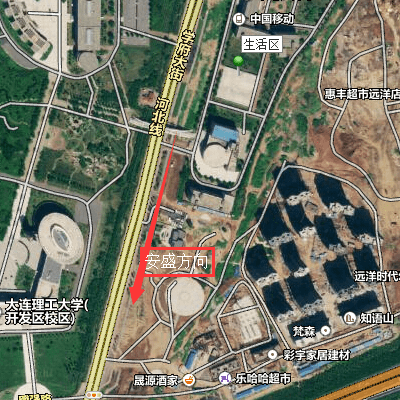
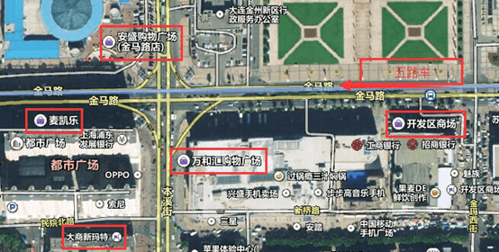

开发区最大的商场应该就是安盛广场和万达广场，从北门出来过街坐路对面的五路车，在安盛广场站下就是了（大约40分钟）。乘坐二路车，在TDK下车即是万达广场。
这里除了安盛和万达，还有麦凯乐、乐购、开发区商场等等购物的地方，可以来这边逛街买衣服、吃饭、看电影。开发区商场里的东西比较便宜，像批发市场，各种日常用品、衣服还有吃的都有，可以讲价。麦凯乐则相对贵一些，中档品牌比较多，顶层还有一个小型的进口商品超市，卖的东西以日货为主，当然价钱也贵啦。安盛和乐购里的东西比较适中，两个商场的一楼还经常会有品牌打折促销，这两家里面的吃的也比较多，安盛一楼还有DQ、泡芙和面包新语卖。可以根据自己的需求来买买买。
看电影的话比较推荐乐购里面的橙天嘉禾影城，票价贵一点，不过环境要比安盛里面的华臣好很多很多。
安盛地下有一个沃尔玛，可以在这里买生活用品和吃的。地下通道里也有一个小的地下商场，有人摆摊卖一些衣服鞋子。

